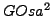

Die Automatische Installation (orig. FAI) ist ein Softwarepaket, das eine vorkonfigurierte und automatisierte Installation von Debian GNU/Linux Systemen ermöglicht. Dazu werden Sammlungen (sog. Profile) von verschiedenen Aspekten der Installation gebildet, um eine Installation gleich oder ähnlich ausgestatteter Rechner möglichst flexibel zu ermöglichen.
 unterstützt mit der FAI-Erweiterung alle Aspekte dieser automatischen Installation. Im Folgenden wird beschrieben, wie Sie die nötigen Vorbereitungen treffen, um Ihre Rechner automatisch mit Debian GNU/Linux zu installieren.